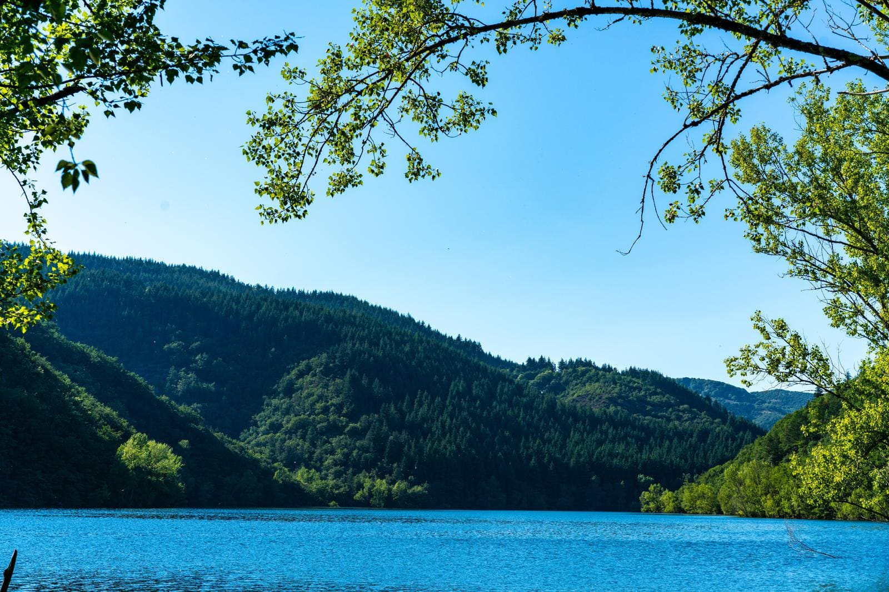
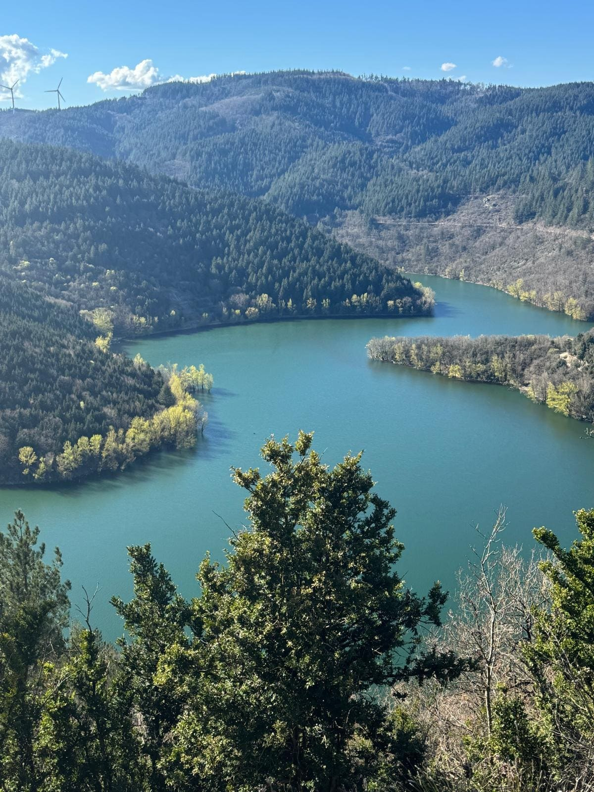
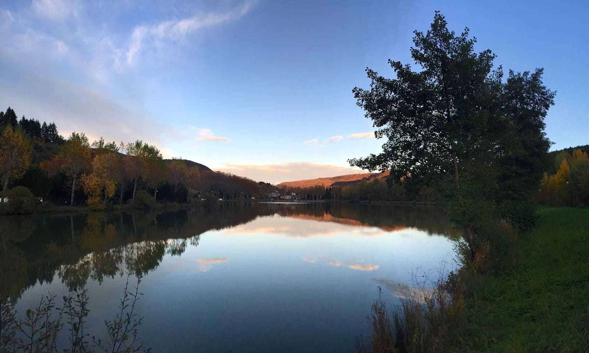

Baignade, plan d'eau du Bouloc, sports nautiques, pêche et le grand tour du lac à pied : le lac des Monts d'Orb, aussi appelé lac d'Avène, se vit côté Ceilhes-et-Rocozels.

Aussi appelé lac d'Avène, ce grand lac s'étire sur près de 6 km dans un écrin de forêts. Régulant le cours de l'Orb, c'est un paradis pour les pêcheurs, les kayakistes et les amateurs de paddle. La baignade et les activités nautiques s'y pratiquent côté Ceilhes-et-Rocozels.
À l'entrée du village, à 430 m d'altitude, le Bouloc offre une vue panoramique et tout pour la détente en famille : pontons de pêche, terrain multisports, jeux pour enfants, aires de pique-nique, pédalos et baignade estivale.
Canoë, kayak, voile ou stand-up paddle : des moniteurs expérimentés encadrent l'initiation à la belle saison. Les eaux calmes du lac en font un spot idéal pour débuter comme pour se perfectionner.

Entouré de forêts, le lac des Monts d'Orb est réputé pour ses carnassiers et ses eaux poissonneuses. Au plan d'eau du Bouloc, des pontons aménagés permettent de taquiner le poisson en famille, à deux pas du village.
Brochets, sandres et perches font le bonheur des pêcheurs ; carte de pêche obligatoire, renseignements auprès de l'AAPPMA locale et de l'Office de tourisme Grand Orb.
En été, la baignade se pratique au plan d'eau du Bouloc (430 m, aménagé pour les familles : pontons, jeux, pique-nique, pédalos) et côté lac des Monts d'Orb sur la commune. Baignade non surveillée : prudence avec les enfants et respect des zones autorisées.
Le grand classique : faire le tour du lac d'Avène à pied, au plus près de l'eau.
Intégré au GR® de Pays « Entre 2 Lacs », le tour du lac des Monts d'Orb relie Ceilhes et Avène à travers la forêt domaniale, entre criques, points de vue sur le barrage et sous-bois ombragés. Le tour complet se fait en deux jours, avec une étape pour la nuit ; des variantes plus courtes longent une partie des berges le temps d'une demi-journée. À compléter, pour les marcheurs, par le col de la Moutoune.